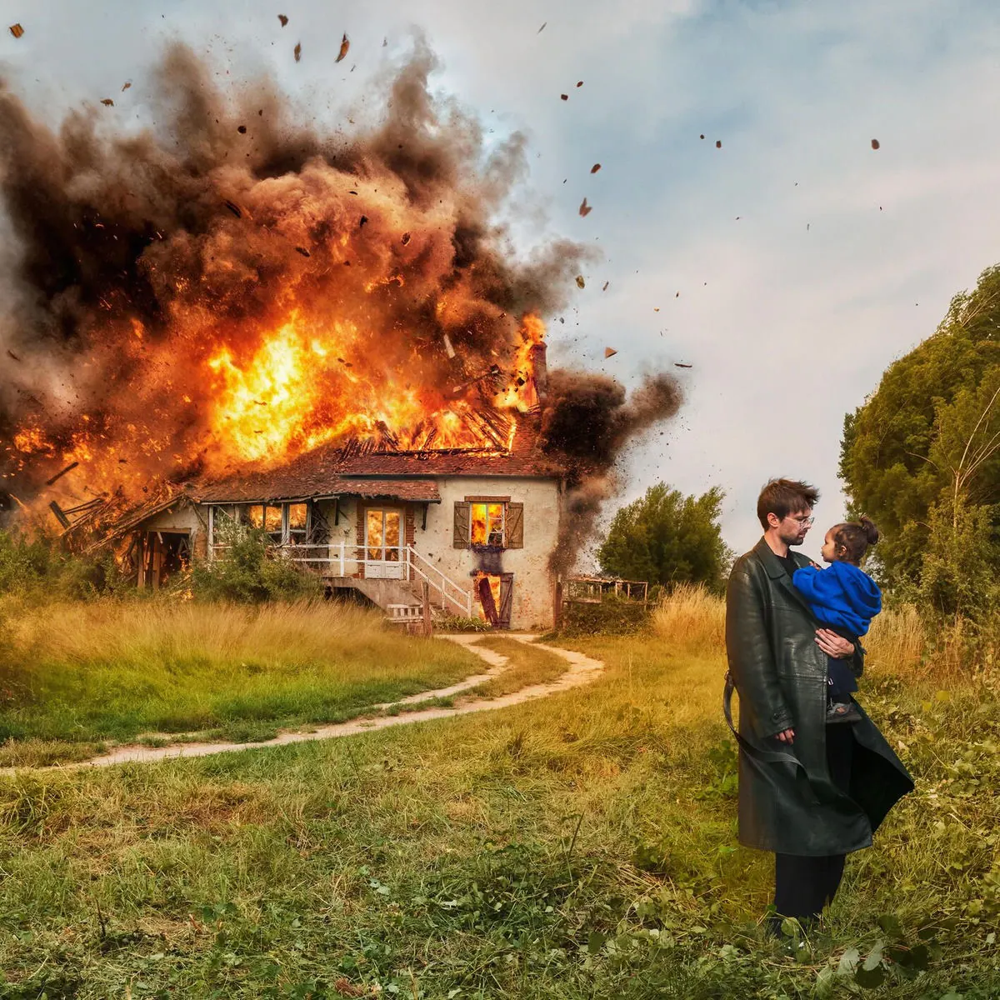

Publié le 9 novembre 2026

Wallace Cleaver s'est produit le 7 novembre 2026 à La Coopérative de Mai à Clermont-Ferrand. Cette date s'inscrit dans sa tournée nationale pour défendre l'album Marcel.
Le rappeur originaire du Loir-et-Cher avait joué la veille au Krakatoa près de Bordeaux. Selon le calendrier de sa tournée, ces concerts consécutifs confirment l'engouement du public. L'artiste choisit de privilégier l'immersion plutôt que les effets de scène massifs.
Comment le concert de Wallace Cleaver transforme-t-il l'album Marcel sur scène ?
Le concert de Wallace Cleaver transforme l'album Marcel sur scène. Il remplace les arrangements électroniques par une formule centrée sur le piano live de son producteur PR. Cette installation épurée donne un relief inédit aux textes introspectifs de l'artiste. Les morceaux mélancoliques prennent une dimension acoustique directe qui captive la salle.
Cette approche permet de faire ressortir la dualité du disque. L'énergie brute de morceaux comme Incendie s'enchaîne sans transition avec la sobriété de titres comme Lettre à moi-même ou Isïa. Le public clermontois a découvert une interprétation vivante, loin des sonorités synthétiques enregistrées en studio.
En épurant la scène, le binôme crée une proximité rare dans les salles de moyenne jauge. Les spectateurs participent aux refrains sans couvrir les silences travaillés par le pianiste. Ce choix esthétique affirme une vraie maturité dans la démarche du duo.
Quelle est la dynamique de la tournée Marcel en cet automne 2026 ?
La tournée traverse la France après un passage marquant au Zénith de Paris le 22 octobre 2026. L'artiste prouve sa capacité à adapter son répertoire à des jauges variées sans perdre l'essence de son propos.
| Date | Ville | Salle |
|---|---|---|
| 22 octobre 2026 | Paris | Zénith de Paris |
| 6 novembre 2026 | Bordeaux (Mérignac) | Krakatoa |
| 7 novembre 2026 | Clermont-Ferrand | La Coopérative de Mai |
| 18 novembre 2026 | Strasbourg | La Laiterie |
L'album Marcel, paru au printemps 2026 d'après les informations d'Astérios Spectacles, aborde des thèmes personnels comme la famille et le deuil. Léo Gond de son vrai nom s'y livrait sans filtre sur son parcours.
Le piano de PR apporte une tenue particulière sur scène. La Coopérative de Mai a résonné d'une écoute attentive où l'ambiance reposait sur la précision des mots.
Pour suivre la dynamique des programmations en région, vous pouvez consulter notre agenda des concerts rap en France. Notre récapitulatif sur les concerts rap à Bordeaux permet aussi de mesurer l'impact de son passage dans le Sud-Ouest.
Pourquoi cette formule scénique fonctionne-t-elle auprès du public ?
Cette formule scénique fonctionne parce qu'elle repose sur un équilibre sincère entre le rap et les instruments organiques. Wallace Cleaver ne cherche pas à surjouer l'attitude. Il laisse les textes porter la performance.
L'entente avec PR au clavier garantit une exécution fluide. Les arrangements apportent un relief sombre et poétique qui distingue le spectacle des formats de tournée habituels.
Le public retrouve sur scène la sensibilité qui faisait la force du projet en streaming. Cette étape clermontoise valide les choix d'un artiste fidèle à sa ligne artistique.